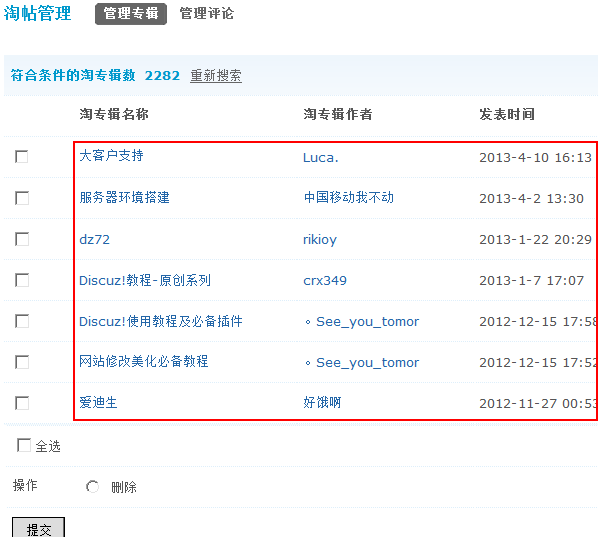
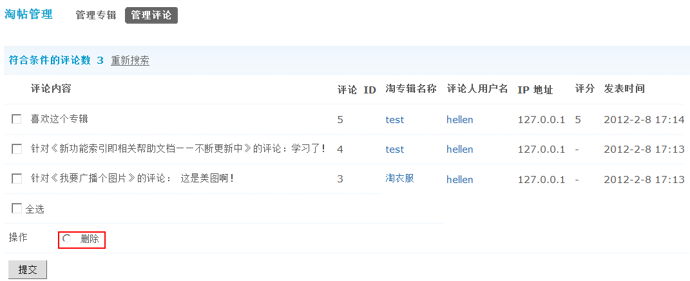

淘帖管理
淘帖功能，可以将站点内优秀内容集中展现给会员，让会员第一时间找到他们所需要的内容，增加用户黏度。
淘帖管理，主要完成管理人员在后台管理淘专辑和对淘专辑即淘帖的评论进行管理。
下面主要为大家介绍管理人员如果在后台管理淘专辑和相关评论的管理。
一、管理专辑
操作路径：【后台】=>【内容】=>【淘帖管理】
可以通过淘专辑名称、淘专辑 ID、淘专辑作者、淘专辑作者 UID 和每页显示数进行搜索，写好搜索条件后，点击“提交”，就可以搜索出符合条件的淘专辑了。
可以对搜索出来的淘专辑进行删除操作。
二、管理评论
可以通过淘专辑的 ID 号、评论内容、评论 ID、评论人用户名、评论人 UID、评分值、IP 地址、发表时间范围及每页显示数进行搜索。
这里的评论包括对淘专辑和淘帖的所有评论，可以对搜索结果进行删除操作，也可以看到详细的评论内容及评分数等详细参数。
